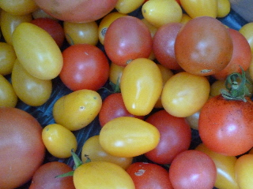
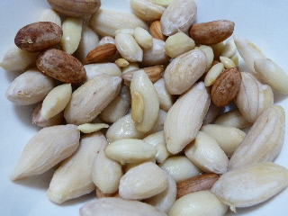

遊びで植物を育てよう
2012/11/10
トマトがまだ採れています。
すっかり寒くなって、畑仕事がちょっと辛いです。

でもまだ夏の野菜のトマトが収穫できました。
ちょっと色が悪いですけどね。
シカクマメもこれでおしまいかな。
次からは冬野菜だけになるかも。
【ページTOP】 【11月TOP】
【園芸TOP】
2012/11/18
落花生を掘りました。
落花生を収穫したので、早速塩茹でしていただきました。
家庭で作ると豆の大きさがこんなにマチマチになっちゃうんですね。
あと、乾燥させていないので豆の大きさがかなり大きいです。

掘りたての落花生を初めて食べました。
美味しかったです。
枝豆のような味なんですが、食感がポリポリしていました。
普通に販売している乾燥したピーナッツとは、また違う美味しさですね。
豆の味が味があるので、いろんな料理に使えるかも？って思いました。
落花生は出来るまでの期間が長いですが、これだけ美味しいなら来年もまた作ってもいいかなって思いました。
【ページTOP】
【11月TOP】
【園芸TOP】
畑仕事じゃないよ。
【おいしいものを食べよう。】【たくさん寝よう。】
【ソロ活をしよう!】【季節感のあることをしよう。】【動画視聴はほどほどに。】【当サイトの全てのコンテンツは無断転載禁止です。】